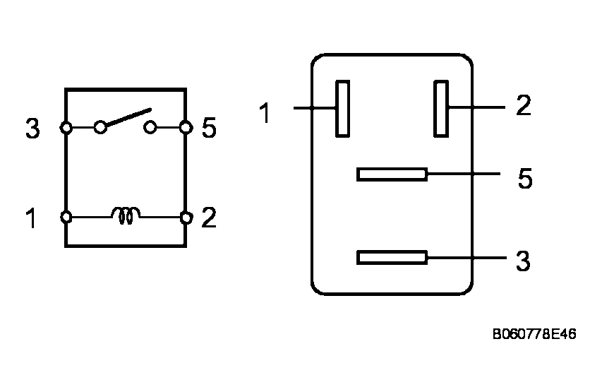
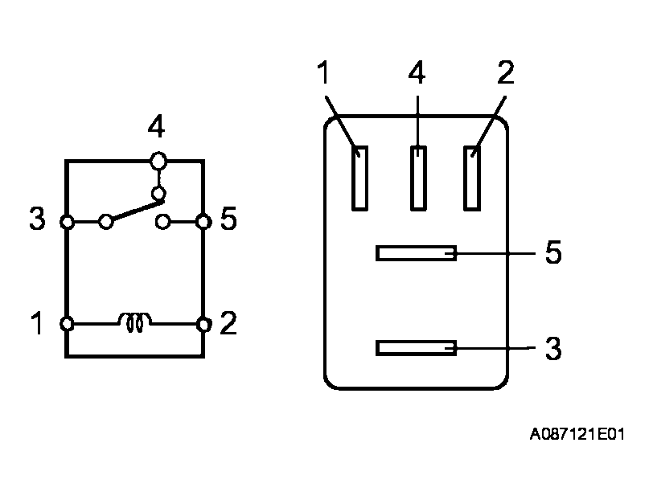

On-Vehicle Inspection
- REMOVE ENGINE ROOM RELAY BLOCK COVER
- INSPECT NO. 1 FAN RELAY (Marking: FAN NO. 1)
- Remove the relay from the engine room relay block.
- Measure the resistance between the terminals of the relay.
Standard resistance
TERMINALS RESISTANCE SPECIFICATIONTester Connection Specified Condition 3 - 5 10 kΩ or higher 3 - 5 Below 1 Ω (when battery voltage is applied to terminals 1 and 2) 
Courtesy of © TOYOTA, LICENSE AGREEMENT TMS1002If the result is not as specified, replace the relay.
- Install the relay.
- INSPECT NO. 2 FAN RELAY (Marking: FAN NO. 2)
- Remove the relay from the engine room relay block.
- Measure the resistance between each terminal of the relay.
Standard resistance
TERMINALS RESISTANCE SPECIFICATIONTester Connection Specified Condition 3 - 4 Below 1 Ω 3 - 5 10 kΩ or higher 3 - 4 10 kΩ or higher (when battery voltage is applied to terminals 1 and 2) 3 - 5 Below 1 Ω (when battery voltage is applied to terminals 1 and 2) 
Courtesy of © TOYOTA, LICENSE AGREEMENT TMS1002If the result is not as specified, replace the relay.
- Install the relay.
- INSTALL ENGINE ROOM RELAY BLOCK COVER